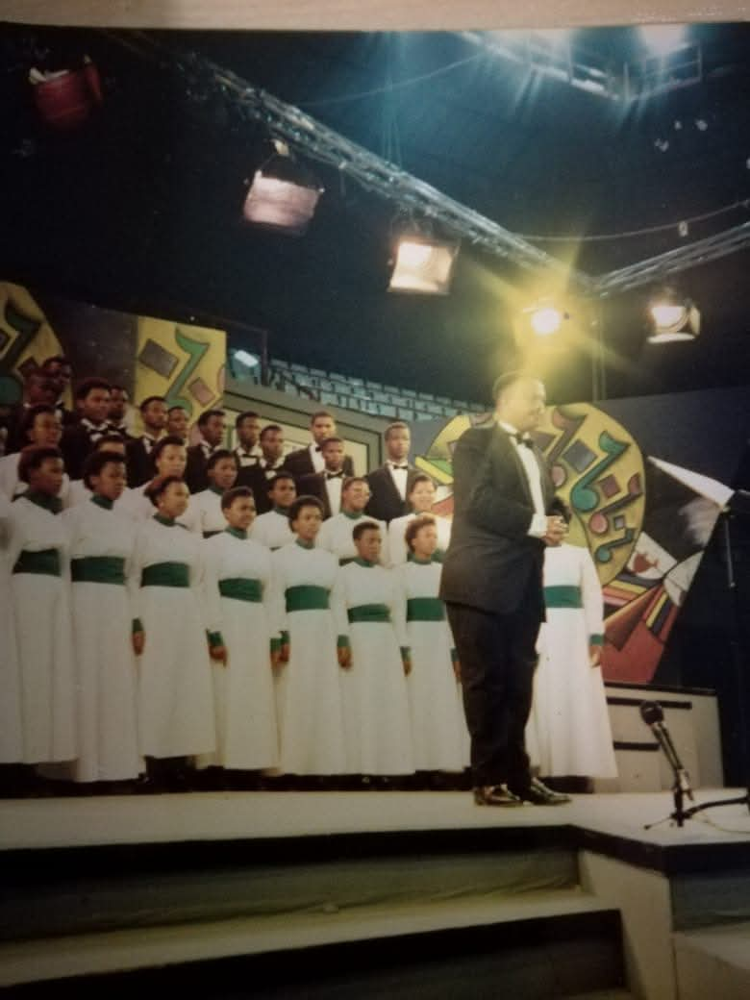

Upcoming festivals, reunions, and cultural exchanges — be part of the UNITRA Choir Legacy.
See Events
Location: Walter Sisulu University (Main Campus)
Date: TBC — first cultural festival of the UNITRA Choir Legacy.
A landmark event celebrating the choir's history and future.
Location: South Korea
Date: Dependent on financial liquidity.
International cultural festival — a new chapter for the legacy.
Cultural exchange and training at the Richard Wagner Music Festival. This opportunity contributed to the creation of an archive of African music and boosted the choir's international standing.
Participation in SATICA, TRACA, and the Old Mutual National Choir Festival — building a distinguished reputation rooted in devout and family-centered principles.
Whether you're a former member or a supporter, there are many ways to contribute to the UNITRA Choir Legacy.
Join as a singing or associate member — R300/month.
Partner with us to support choral music and community development.
Help with events, sub‑committees, and alumni engagement.